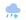

<div class="weather-and-trafic">
  <div class="weather-and-trafic__weather">

    <div class="weather-and-trafic__item-titles">
      <span class="weather-and-trafic__item-title_main">Погода</span>
      <span class='weather-and-trafic__item-title'>Карта осадков</span>
      
    </div>

    <div class="weather-and-trafic__weather-content">

      <div class='weather-and-trafic__weather-content-item'>
        
        <span class='weather-and-trafic__temp'> 0° </span>
      </div>


      <div class="weather-and-trafic__forecast">

        <div class="weather-and-trafic__forecast-item weather-and-trafic__forecast-item_first">
          <div><span> Утром </span> </div>
          <div class='weather-and-trafic__forecast-morning'>
            
            <span
              class='weather-and-trafic__forecast-item-temp weather-and-trafic__forecast-item-temp_first'>-3°</span>
          </div>
        </div>

        <div class="weather-and-trafic__forecast-item weather-and-trafic__forecast-item_second">
          <div><span> Днём </span> </div>
          <div class='weather-and-trafic__forecast-evening'>
            
            <span
              class='weather-and-trafic__forecast-item-temp weather-and-trafic__forecast-item-temp_second'>-1°</span>
          </div>
        </div>

        <div class="weather-and-trafic__forecast-item weather-and-trafic__forecast-item_third">
          <div> <span> Вечером </span> </div>
          <div class='weather-and-trafic__forecast-nigth'>
            
            <span
              class='weather-and-trafic__forecast-item-temp weather-and-trafic__forecast-item-temp_third'>-2°</span>
          </div>
        </div>
      </div>
    </div>
  </div>

  <div class="weather-and-trafic__trafic">
    <div class="weather-and-trafic__item-titles">
      <span class="weather-and-trafic__item-title_main">Пробки</span>
      <span class="weather-and-trafic__item-title">Метро</span>
      <span class='weather-and-trafic__item-title'>Расписание</span>
      <span class='weather-and-trafic__item-title'>Такси</span>
      
    </div>
    <div class="weather-and-trafic__trafic-content">
      <div class='weather-and-trafic__trafic-item'>
        
        <span class='weather-and-trafic__trafic-content-number'> 1 </span>
      </div>
      <span class='weather-and-trafic__trafic-content-label'> На дорогах свобоно </span>
    </div>
  </div>
</div>
